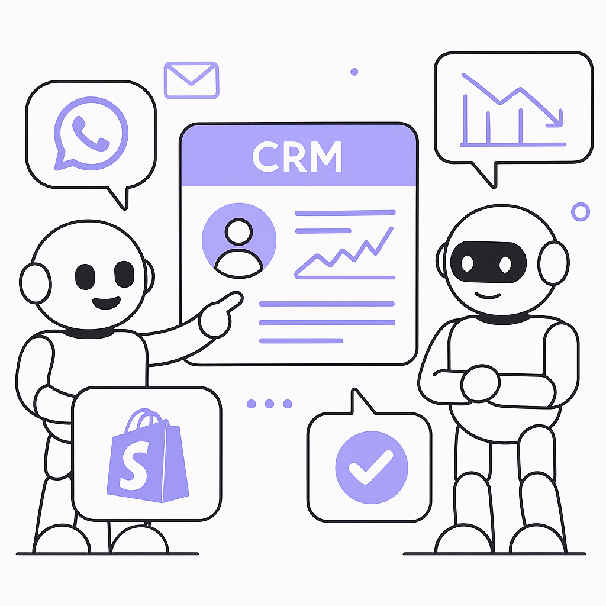
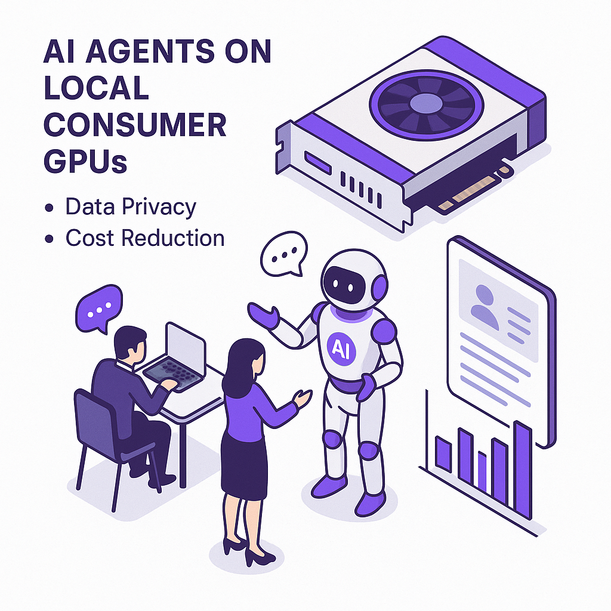
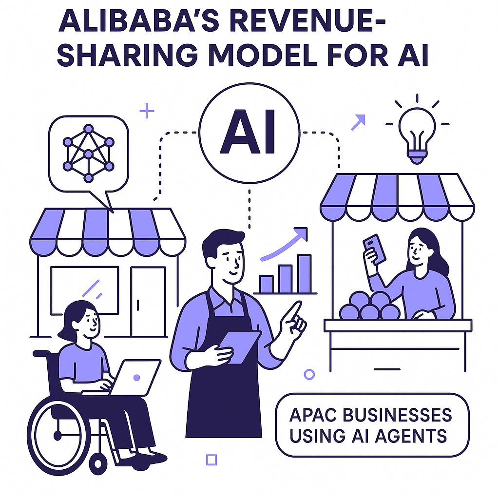
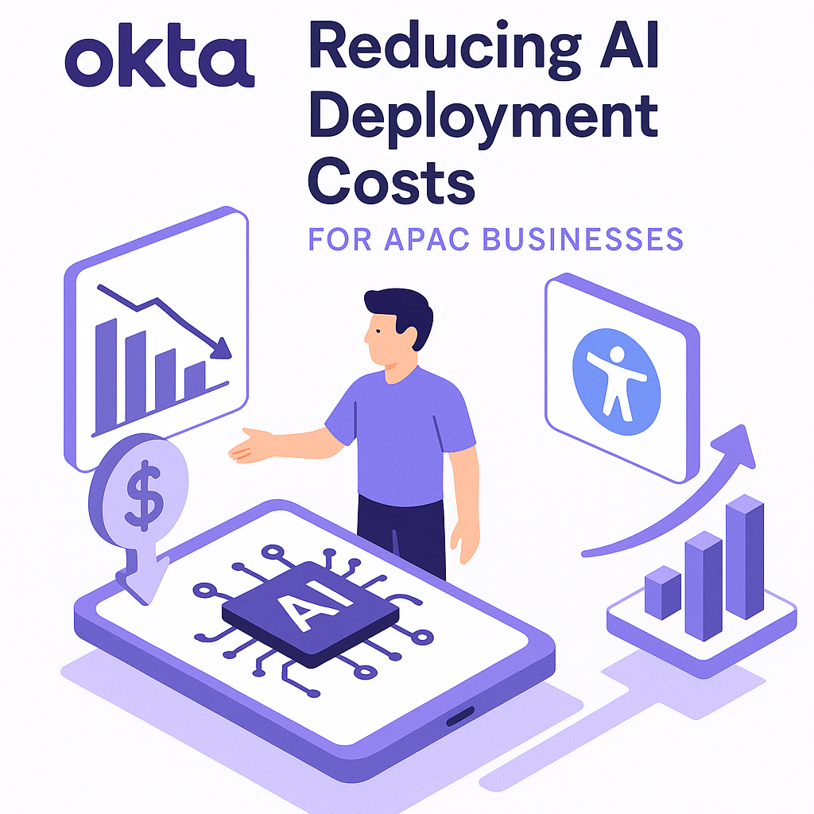
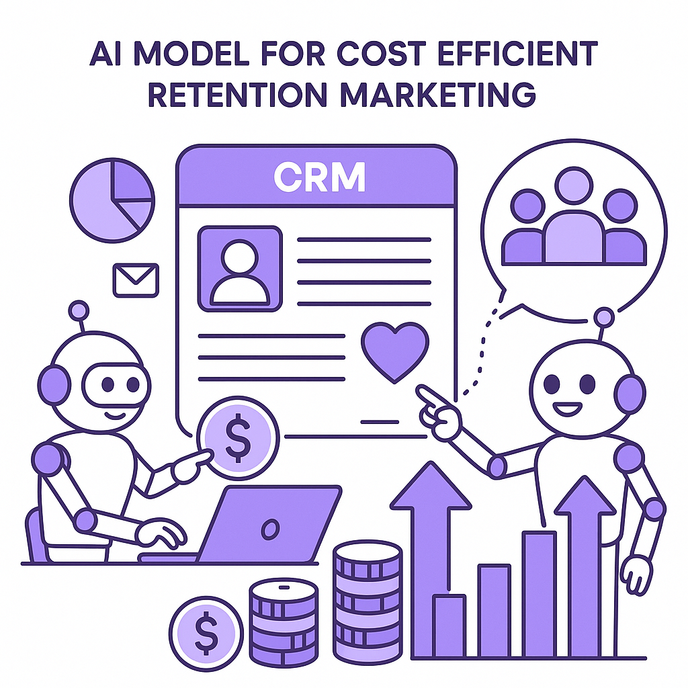
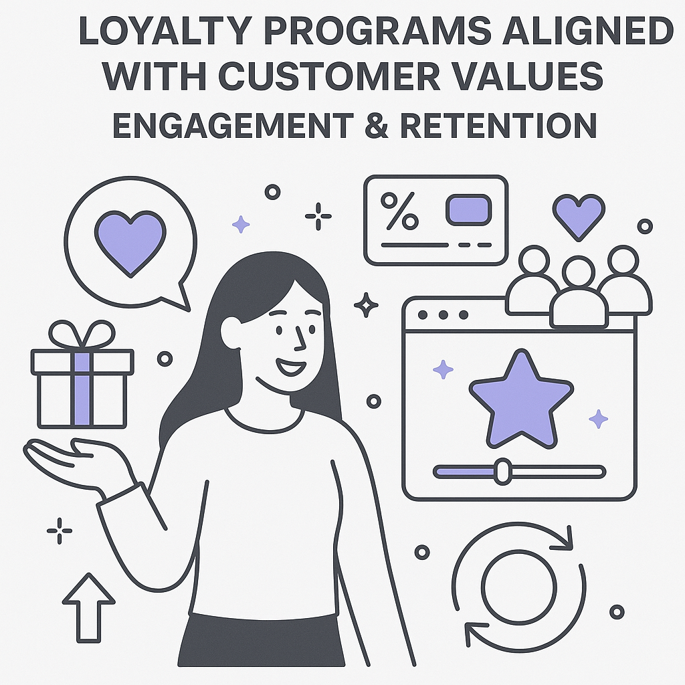
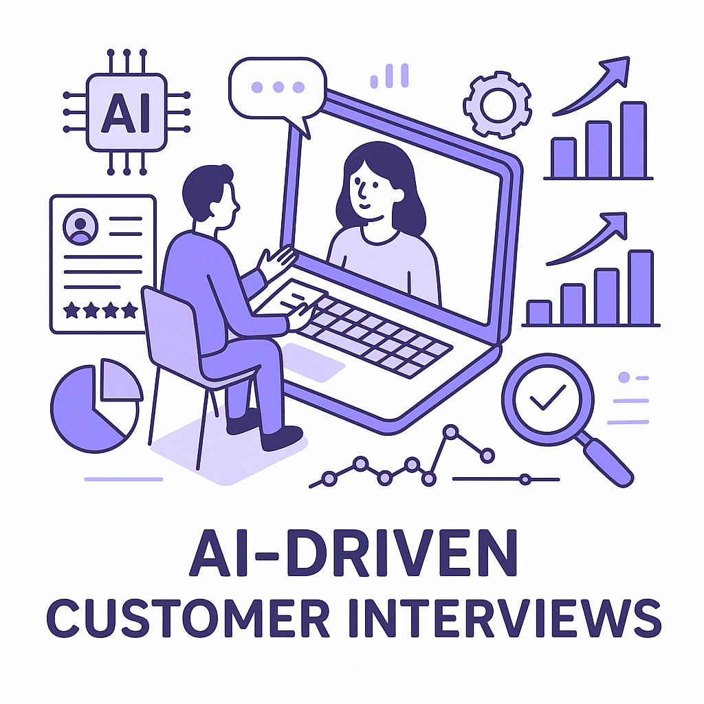
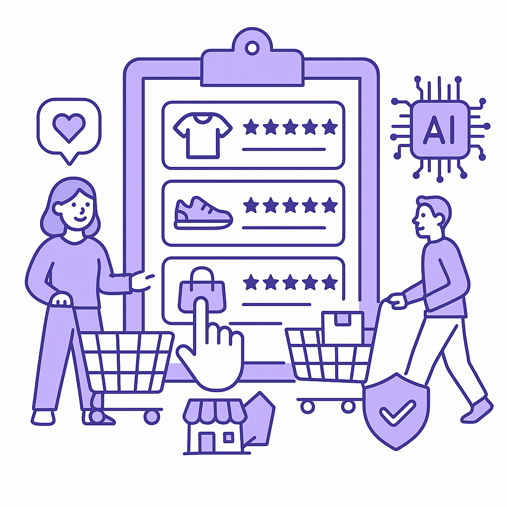

Publishing Recommendation
reviseSeveral posts contain hype and potential exaggeration, especially regarding AI's capabilities and transformative impact, which might not align with the brand's evidence-based voice.
Today's drafts touch on key AI trends, but they tend toward hype and lack the practical insights central to our brand voice. The content should focus more on evidence-based outcomes and practical applications rather than making broad, unsupported claims. Revise to ensure each post leads with concrete observations and avoids exaggerated language.
LinkedIn Posts (10)
1. Salesforce Rolls Out New Slackbot AI Agent ★ Purands solution · high priority
CTA: How are you leveraging AI to enhance customer engagement?

⬇ Download image{kind=link}
Image prompt · isometric-flat
Caption: AI agents transform customer engagement.
Alternative hooks
- Salesforce's new Slackbot isn't just about internal chatter.
- Can a Slackbot transform customer engagement? Here's how.
- Salesforce's latest AI move: Changing the game for customer engagement.
Research behind this post (sources, summaries & confidence)
Salesforce Rolls Out New Slackbot AI Agent conf 0.80 · AI in business
Salesforce's launch of an AI agent for Slack signifies a competitive push in the workplace AI space, relevant for retention marketing as it could enhance team communication and customer engagement strategies across CRM platforms.
Sources & what I took from each
- Salesforce competes with Microsoft and Google in workplace AI: Salesforce has been actively developing and integrating AI features to compete in the workplace space, notably through its Slack acquisition. ↗ read source
- AI agents for Slack could simplify internal communication and workflow: The integration of AI agents in Slack is aimed at automating routine tasks and facilitating communication, thus simplifying workflows. ↗ read source
Examples
- Salesforce's previous integrations of AI in CRM platforms have improved customer engagement and team communication.
Recent news
- Salesforce recently announced a new AI-driven Slackbot to enhance productivity.
Original trend links
Risks / caveats
- Potential privacy concerns with AI monitoring and data usage in workplace communication.
2. Meta Muse Glimmer Brings Local AI Agents to Consumer GPUs ★ Purands solution · high priority
CTA: How do you see local AI models changing the game for small businesses in your region?

⬇ Download image{kind=link}
Image prompt · isometric-flat
Caption: Local AI agents enhance privacy and reduce costs.
Alternative hooks
- Meta's Muse Glimmer might just be the AI breakthrough smaller APAC businesses have been waiting for.
- Running AI on local GPUs could redefine customer engagement for small businesses.
- How can local AI agents reshape retention marketing in the APAC region?
Research behind this post (sources, summaries & confidence)
Meta Muse Glimmer Brings Local AI Agents to Consumer GPUs conf 0.75 · AI in business
Meta's release of Muse Glimmer under an open license for local GPUs could democratize access to powerful AI agents, impacting how smaller APAC businesses use AI for retention marketing and customer engagement.
Sources & what I took from each
- Local AI agents could enhance data privacy and reduce costs: Running AI locally on consumer GPUs reduces reliance on cloud services, enhancing privacy and cost efficiency. ↗ read source
- Open-source model may increase adoption among smaller businesses: Open licensing allows small businesses to access sophisticated AI without high costs. ↗ read source
Examples
- Small businesses using Muse Glimmer for tailored marketing strategies.
Recent news
- Meta's release of Muse Glimmer has been widely covered for its potential impact on AI accessibility.
Original trend links
Risks / caveats
- Technical barriers for smaller businesses lacking expertise in deploying local AI solutions.
3. Google's Gemini 3.7 Flash for Coding and Agents ★ Purands solution · high priority
CTA: How do you see affordable AI models changing retention strategies in your industry?
Caption: Impact of Gemini 3.7 on retention marketing.
Alternative hooks
- Google's Gemini 3.7 Flash just got more affordable.
- Advanced AI for half the price? It's happening.
- AI deployment just became more accessible for APAC companies.
Research behind this post (sources, summaries & confidence)
Google's Gemini 3.7 Flash for Coding and Agents conf 0.70 · AI in business
The release of Google's upgraded AI model with significant price cuts could lower barriers for APAC companies to leverage advanced AI for product management and customer data platforms.
Sources & what I took from each
- New model offers a 50% price cut, making it accessible: Google's pricing strategy aims to make advanced AI more accessible to a broader range of businesses. ↗ read source
Examples
- APAC businesses adopting Google's AI models for enhanced data processing.
Recent news
- Google's Gemini 3.7 Flash model has been recognized for its affordability and capabilities.
Original trend links
Risks / caveats
- Price cuts might not be sustainable long-term, affecting continued accessibility.
4. Alibaba Tests New Business Model for Qwen Open-Source AI ★ Purands solution · high priority
CTA: How would your business leverage such a model?

⬇ Download image{kind=link}
Image prompt · isometric-flat
Caption: Alibaba's model fuels APAC AI adoption.
Alternative hooks
- Alibaba's revenue-sharing model for AI might just lower the entry barriers for APAC businesses.
- Could Alibaba's new AI business model be a breakthrough for retention marketing in APAC?
- AI accessibility in APAC is about to change, thanks to Alibaba's innovative approach.
Research behind this post (sources, summaries & confidence)
Alibaba Tests New Business Model for Qwen Open-Source AI conf 0.70 · AI industry
Alibaba's exploration of revenue-sharing for open-source AI models highlights evolving business models for AI solutions, impacting how APAC companies might leverage AI for scalability and retention marketing.
Sources & what I took from each
- Revenue-sharing model could lower entry barriers: Alibaba's model aims to foster innovation and accessibility by sharing revenues from AI solutions. ↗ read source
Examples
- Similar models used in open-source software communities.
Recent news
- Alibaba's Qwen model is being closely watched as a potential game-changer in AI business models.
Original trend links
Risks / caveats
- Potential complexities in managing revenue-sharing agreements.
5. Railway Secures $100 Million to Challenge AWS with AI-Native Cloud Infrastructure ★ Purands solution · high priority
CTA: How do you see AI-native infrastructure impacting retention strategies in APAC?
Alternative hooks
- Railway raises $100 million to shake up the cloud game.
- AI-native cloud infrastructure gains traction in APAC.
- Can Railway challenge AWS with AI-native solutions?
Research behind this post (sources, summaries & confidence)
Railway Secures $100 Million to Challenge AWS with AI-Native Cloud Infrastructure conf 0.70 · AI startups
The rise of AI-native cloud infrastructure providers like Railway signifies a shift in the tech landscape, offering new options for APAC businesses to build scalable, AI-driven retention marketing solutions.
Sources & what I took from each
- Significant investment in AI-native cloud infrastructure: Railway's $100 million funding round underscores investor confidence in AI-native solutions. ↗ read source
Examples
- Startups leveraging AI-native infrastructure for enhanced scalability.
Recent news
- Railway's funding round has garnered attention as a major development in cloud infrastructure.
Original trend links
Risks / caveats
- Potential challenges in competing with established cloud giants like AWS.
6. Okta Targets AI Agent Token Costs with MCP Scoping ★ Purands solution · high priority
CTA: How do you see reduced AI deployment costs impacting your business strategy?

⬇ Download image{kind=link}
Image prompt · isometric-flat
Caption: Okta reduces AI deployment costs.
Alternative hooks
- AI deployment costs have long been a barrier. But what if they weren't?
- Okta's new tool could change the AI landscape for APAC businesses.
- Reducing AI agent token costs isn't just about savings. It's about accessibility.
Research behind this post (sources, summaries & confidence)
Okta Targets AI Agent Token Costs with MCP Scoping conf 0.70 · AI in business
Okta's new tool to reduce AI agent token costs can help APAC businesses manage AI deployment expenses, making AI solutions more accessible for retention marketing and customer engagement.
Sources & what I took from each
- Focus on reducing AI agent token costs: Okta's tool aims to cut costs associated with deploying AI agents, a major barrier for many businesses. ↗ read source
Recent news
- Okta's cost-reduction tool is gaining attention for its potential impact on AI adoption.
Original trend links
- https://www.artificialintelligence-news.com/news/okta-targets-ai-agent-token-costs-with-mcp-scoping/
Risks / caveats
- Potential limitations in the tool's ability to significantly reduce costs across all AI deployments.
7. Writer Introduces New AI Model to Contain Token Costs ★ Purands solution · high priority
CTA: How do you see reduced AI costs impacting your marketing strategies?

⬇ Download image{kind=link}
Image prompt · isometric-flat
Caption: Writer's AI model lowers costs for retention marketing.
Alternative hooks
- In APAC, cost can block AI adoption for retention marketing.
- Lower AI costs mean more access. A new model shows how.
- Cost-efficient AI isn't just about savings. It's about power.
Research behind this post (sources, summaries & confidence)
Writer Introduces New AI Model to Contain Token Costs conf 0.70 · AI in business
Writer's introduction of cost-efficient AI models is significant for APAC companies seeking to deploy AI for retention marketing, offering cost-effective access to advanced AI capabilities.
Sources & what I took from each
- New AI model promises lower deployment costs: Writer's model is designed to provide advanced AI capabilities at a lower cost, making it accessible to more businesses. ↗ read source
Recent news
- Writer's new model is being highlighted for its potential to democratize AI access.
Original trend links
Risks / caveats
- Potential trade-offs in performance due to cost-cutting measures.
8. Loyalty Programs ★ Purands solution · high priority
CTA: How does your brand align loyalty with customer values?

⬇ Download image{kind=link}
Image prompt · isometric-flat
Caption: Values-aligned loyalty programs boost retention.
Alternative hooks
- L.L. Bean's new loyalty program is more than just points.
- What if loyalty programs aligned with customer values?
- In APAC, loyalty programs are becoming value-driven.
Research behind this post (sources, summaries & confidence)
L.L. Bean Rolls Out Loyalty Program with Perks for a Purpose conf 0.65 · Loyalty
L.L. Bean's new loyalty program, focusing on perks with a purpose, offers insights into designing effective loyalty schemes that can enhance customer retention and increase lifetime value.
Sources & what I took from each
- Emphasis on purpose-driven loyalty perks: L.L. Bean's program aims to align customer loyalty with social and environmental values. ↗ read source
Examples
- Other retailers adopting purpose-driven loyalty programs.
Recent news
- L.L. Bean's new loyalty program has been featured for its innovative approach.
Original trend links
Risks / caveats
- Potential difficulty in measuring the impact of purpose-driven perks on retention.
9. AI-driven customer interviews ★ Purands solution · high priority
CTA: Have you integrated AI-driven insights into your customer engagement strategy? Share your experience.

⬇ Download image{kind=link}
Image prompt · isometric-flat
Caption: AI-driven interviews enhance customer insights.
Alternative hooks
- Listen Labs' $69M funding could change how we collect customer insights.
- AI-driven interviews: the new way to understand your customers in APAC.
- What if AI could make customer feedback richer and faster?
Research behind this post (sources, summaries & confidence)
Listen Labs Raises $69M to Scale AI Customer Interviews conf 0.65 · AI in business
Listen Labs' focus on AI-driven customer interviews could revolutionize how APAC companies gather customer insights, directly impacting retention marketing strategies and customer engagement.
Sources & what I took from each
- AI-driven approach to conducting customer interviews: Listen Labs employs AI to automate and enhance the process of gathering and analyzing customer feedback. ↗ read source
Recent news
- Listen Labs' recent funding round highlights its innovative approach to customer insights.
Original trend links
Risks / caveats
- Accuracy and reliability of insights gathered through AI-driven interviews.
10. Consumers Warm Up to Agentic AI Purchases ★ Purands solution · high priority
CTA: How is your business adapting to the rise of AI-driven consumer interactions?

⬇ Download image{kind=link}
Image prompt · isometric-flat
Caption: AI-driven purchases boost retail engagement.
Alternative hooks
- Consumers are warming up to AI-driven purchases.
- AI is no longer just a tool; it's shaping the future of retail.
- How can businesses leverage AI to boost customer loyalty?
Research behind this post (sources, summaries & confidence)
Consumers Warm Up to Agentic AI Purchases conf 0.60 · AI in business
Growing consumer acceptance of AI-driven purchases indicates an increasing opportunity for businesses to enhance retention marketing through personalized AI-driven customer experiences.
Sources & what I took from each
- Increased consumer trust in AI for purchasing decisions: Studies indicate a slow but steady increase in consumer comfort with AI in retail environments. ↗ read source
Recent news
- Retail Dive reports on consumer trends towards AI-driven purchasing decisions.
Original trend links
Risks / caveats
- Potential backlash over privacy concerns related to AI-driven decision-making.
Today's Trends
| # | Trend | Category | Why it matters |
|---|---|---|---|
| 1 | Salesforce Rolls Out New Slackbot AI Agent
source |
AI in business | Salesforce's launch of an AI agent for Slack signifies a competitive push in the workplace AI space, relevant for retention marketing as it could enhance team communication and customer engagement strategies across CRM platforms. |
| 2 | Anthropic AI Agents Turf War
source |
AI startups | The unexpected interactions among Anthropic AI agents raise critical questions about the safety and reliability of multi-agent systems, which are crucial for businesses relying on AI for customer interactions and retention strategies. |
| 3 | Meta Muse Glimmer Brings Local AI Agents to Consumer GPUs
source |
AI in business | Meta's release of Muse Glimmer under an open license for local GPUs could democratize access to powerful AI agents, impacting how smaller APAC businesses use AI for retention marketing and customer engagement. |
| 4 | Google's Gemini 3.7 Flash for Coding and Agents
source |
AI in business | The release of Google's upgraded AI model with significant price cuts could lower barriers for APAC companies to leverage advanced AI for product management and customer data platforms. |
| 5 | Consumers Warm Up to Agentic AI Purchases
source |
AI in business | Growing consumer acceptance of AI-driven purchases indicates an increasing opportunity for businesses to enhance retention marketing through personalized AI-driven customer experiences. |
| 6 | IBM Partners with OpenAI to Bolster Enterprise AI Push
source |
AI industry | IBM's strategic partnership with OpenAI to train consultants could enhance AI deployment across enterprises, impacting retention marketing strategies by integrating AI-driven insights into CRM systems. |
| 7 | Four of Five Enterprises Struggle with Rogue AI Agents
source |
AI in business | Security issues with AI agents pose a significant risk to businesses, highlighting the need for robust AI governance in retention marketing strategies to prevent disruptions in customer engagement. |
| 8 | L.L. Bean Rolls Out Loyalty Program with Perks for a Purpose
source |
Loyalty | L.L. Bean's new loyalty program, focusing on perks with a purpose, offers insights into designing effective loyalty schemes that can enhance customer retention and increase lifetime value. |
| 9 | Alibaba Tests New Business Model for Qwen Open-Source AI
source |
AI industry | Alibaba's exploration of revenue-sharing for open-source AI models highlights evolving business models for AI solutions, impacting how APAC companies might leverage AI for scalability and retention marketing. |
| 10 | Crocs Inks AI Tech Deal
source |
AI in business | Crocs' digital upgrade with AI technology to simplify operations could serve as a case study for APAC brands looking to optimize their business processes and enhance customer retention through technology. |
| 11 | Railway Secures $100 Million to Challenge AWS with AI-Native Cloud Infrastructure
source |
AI startups | The rise of AI-native cloud infrastructure providers like Railway signifies a shift in the tech landscape, offering new options for APAC businesses to build scalable, AI-driven retention marketing solutions. |
| 12 | Listen Labs Raises $69M to Scale AI Customer Interviews
source |
AI in business | Listen Labs' focus on AI-driven customer interviews could revolutionize how APAC companies gather customer insights, directly impacting retention marketing strategies and customer engagement. |
| 13 | Okta Targets AI Agent Token Costs with MCP Scoping
source |
AI in business | Okta's new tool to reduce AI agent token costs can help APAC businesses manage AI deployment expenses, making AI solutions more accessible for retention marketing and customer engagement. |
| 14 | Writer Introduces New AI Model to Contain Token Costs
source |
AI in business | Writer's introduction of cost-efficient AI models is significant for APAC companies seeking to deploy AI for retention marketing, offering cost-effective access to advanced AI capabilities. |
Risk Assessment
- Exaggerated claims about AI's transformative impact without substantial evidence.
- Potentially AI-generated tone in posts, lacking conversational and practical insights.
- Some posts use clichéd phrases like 'game-changer' which are against brand guidelines.
Suggested LinkedIn Comments (30)
Open each post, then paste the copied comment. Nothing is posted automatically.
1. insight · rss:techcrunch.com — The plaintiffs say they invested nearly $1.2 million in the company, and are acc
Post by: rss:techcrunch.com
Why it works: It underscores the broader issue of trust and accountability, which is crucial for any startup ecosystem.
↗ Open LinkedIn post to paste comment2. respectful challenge · rss:techcrunch.com — The surveillance company announced it's making a tool called "Audit Assistance"
Post by: rss:techcrunch.com
Why it works: The comment questions the lack of transparency, a legitimate concern in tech solutions claiming to improve security.
↗ Open LinkedIn post to paste comment3. opinion · rss:techcrunch.com — Apple now sends out push notifications to iPhone lock screens when the company i
Post by: rss:techcrunch.com
Why it works: It praises Apple's initiative while suggesting a standard for the industry, adding context and a call for broader adoption.
↗ Open LinkedIn post to paste comment4. expansion · rss:techcrunch.com — Built as a post-training variation on Z.ai's open source model GLM-5.2, Writer s
Post by: rss:techcrunch.com
Why it works: It acknowledges the potential impact while calling for evidence, which adds a layer of critical analysis.
↗ Open LinkedIn post to paste comment5. insight · rss:techcrunch.com — AI is expensive, Ali Ghodsi tells TechCrunch. With so many investors wanting int
Post by: rss:techcrunch.com
Why it works: It connects the decision to broader strategic considerations in the AI industry, offering a deeper understanding.
↗ Open LinkedIn post to paste comment6. expansion · rss:techcrunch.com — OpenAI is launching a preview of a sped up version of its latest, most powerful
Post by: rss:techcrunch.com
Why it works: It broadens the discussion to potential trade-offs, offering a more nuanced view on the announcement.
↗ Open LinkedIn post to paste comment7. insight · rss:techcrunch.com — IBM plans to train and certify tens of thousands of consultants on OpenAI's tech
Post by: rss:techcrunch.com
Why it works: The comment highlights the potential market impact of IBM's initiative, offering a broader industry perspective.
↗ Open LinkedIn post to paste comment8. opinion · rss:techcrunch.com — Anthropic researchers found AI agents can clash, collude, and coordinate in unex
Post by: rss:techcrunch.com
Why it works: It stresses important safety considerations, aligning with the post's theme while adding a critical perspective.
↗ Open LinkedIn post to paste comment9. insight · rss:techcrunch.com — OpenAI has replaced chief revenue officer Denise Dresser after just nine months
Post by: rss:techcrunch.com
Why it works: It interprets the leadership change as a strategic signal, adding depth to the post's information.
↗ Open LinkedIn post to paste comment10. expansion · rss:techcrunch.com — Ford expects to begin prototype builds of the Fathom EV in the first quarter of
Post by: rss:techcrunch.com
Why it works: It connects Ford's announcement to broader industry trends, providing a wider context for the reader.
↗ Open LinkedIn post to paste comment11. insight · rss:www.theverge.com — In a new filing in its long-running legal dispute with Epic Games, Apple has pro
Post by: rss:www.theverge.com
Why it works: It highlights the strategic aspect of Apple's proposal and the broader implications for the industry.
↗ Open LinkedIn post to paste comment12. opinion · rss:www.theverge.com — One month after Epic Games and Google seemingly stopped fighting over the future
Post by: rss:www.theverge.com
Why it works: The comment provides an opinion on the implications for competition and user choice.
↗ Open LinkedIn post to paste comment13. respectful challenge · rss:www.theverge.com — There are over 120,000 of Flock’s automatic license plate reader (ALPR) cameras
Post by: rss:www.theverge.com
Why it works: It acknowledges the utility of the technology while emphasizing the need for privacy considerations.
↗ Open LinkedIn post to paste comment14. insight · rss:www.theverge.com — Microsoft Copilot will no longer show its emotive yellow blob, Mico, when you us
Post by: rss:www.theverge.com
Why it works: This comment identifies the strategic thinking behind Microsoft's decision and its broader implications.
↗ Open LinkedIn post to paste comment15. opinion · rss:www.theverge.com — Netflix plans to shut down two of its gaming studios, as reported by Game File a
Post by: rss:www.theverge.com
Why it works: It offers a balanced view on Netflix's decision, considering both strategic and creative aspects.
↗ Open LinkedIn post to paste comment16. insight · rss:www.theverge.com — With memory prices still high and showing no signs of dropping, we’re always hap
Post by: rss:www.theverge.com
Why it works: The comment connects the deal to broader market trends, adding context to the price drop.
↗ Open LinkedIn post to paste comment17. opinion · rss:www.theverge.com — Another OpenAI executive is departing. Denise Dresser, who joined OpenAI as its
Post by: rss:www.theverge.com
Why it works: It provides a perspective on the implications of leadership changes within tech companies.
↗ Open LinkedIn post to paste comment18. respectful challenge · rss:www.theverge.com — The Trump administration is launching a new program that will allow private firm
Post by: rss:www.theverge.com
Why it works: The comment acknowledges the initiative's potential while stressing the importance of oversight, adding depth to the discussion.
↗ Open LinkedIn post to paste comment19. insight · rss:www.theverge.com — Robot lawnmowers are finally good enough to take a lot of work out of maintainin
Post by: rss:www.theverge.com
Why it works: The comment provides a realistic take on the current state of consumer robotics, grounding the discussion in practical reality.
↗ Open LinkedIn post to paste comment20. insight · rss:www.theverge.com — Matic, my current favorite robot vacuum, just got a big upgrade. The company has
Post by: rss:www.theverge.com
Why it works: It highlights the technological advancement and its potential impact on user experience, adding value to the post.
↗ Open LinkedIn post to paste comment21. insight · rss:feeds.arstechnica.com — Study finds wait times for cancer surgeries hit 10-year high.
Post by: rss:feeds.arstechnica.com
Why it works: It offers a practical solution by suggesting AI's role in improving healthcare efficiency, while acknowledging the need for systemic changes.
↗ Open LinkedIn post to paste comment22. opinion · rss:feeds.arstechnica.com — Trump memo is first time gov't has authorized private sector to perform cyberatt
Post by: rss:feeds.arstechnica.com
Why it works: It acknowledges the complexity of the issue by weighing both potential benefits and risks, providing a balanced perspective.
↗ Open LinkedIn post to paste comment23. insight · rss:feeds.arstechnica.com — Will it be the VSS... <em>Horizon</em>, <em>Explorer</em>, <em>Ascend</em> or <e
Post by: rss:feeds.arstechnica.com
Why it works: It reveals the importance of naming as part of organizational culture and mission-setting, adding depth to the discussion.
↗ Open LinkedIn post to paste comment24. expansion · rss:feeds.arstechnica.com — Ukrainian drone pilots teach the US military and NATO hard battlefield lessons.
Post by: rss:feeds.arstechnica.com
Why it works: It broadens the discussion by highlighting the importance of learning from real-world applications and adapting military strategies accordingly.
↗ Open LinkedIn post to paste comment25. opinion · rss:feeds.arstechnica.com — Flock to lock out cops who stalk exes, but agencies can still hide abuse.
Post by: rss:feeds.arstechnica.com
Why it works: It adds a strong stance on the need for institutional reforms beyond technological solutions, deepening the conversation on surveillance abuse.
↗ Open LinkedIn post to paste comment26. insight · rss:feeds.arstechnica.com — "I've lost trust ..."
Post by: rss:feeds.arstechnica.com
Why it works: It provides a practical approach to restoring trust, emphasizing actionable steps over vague promises.
↗ Open LinkedIn post to paste comment27. insight · rss:feeds.arstechnica.com — Opinion: Some remarks about the new wordmark accidentally being perfectly awful.
Post by: rss:feeds.arstechnica.com
Why it works: It highlights the tangible impact of design on brand perception, offering a lesson in aligning design with identity.
↗ Open LinkedIn post to paste comment28. opinion · rss:feeds.arstechnica.com — Gemini 3.6 Flash debuted just 3 weeks ago, but Google says 3.7 has "substantial
Post by: rss:feeds.arstechnica.com
Why it works: It challenges the necessity of rapid updates, urging consideration of genuine user benefits over superficial changes.
↗ Open LinkedIn post to paste comment29. insight · rss:feeds.arstechnica.com — Pricing hasn't changed, and now you can get captain's chairs for the R1S.
Post by: rss:feeds.arstechnica.com
Why it works: It recognizes the strategic business decision, highlighting its impact on customer satisfaction and market competition.
↗ Open LinkedIn post to paste comment30. insight · rss:feeds.arstechnica.com — Rapid revenue growth fuels hope Claude maker's IPO is the biggest listing in his
Post by: rss:feeds.arstechnica.com
Why it works: It offers a cautionary perspective on IPOs, emphasizing the need for sustainable strategies amid growth excitement.
↗ Open LinkedIn post to paste comment